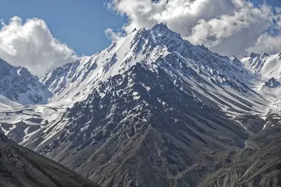
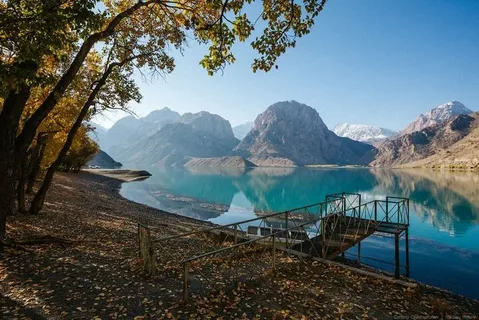
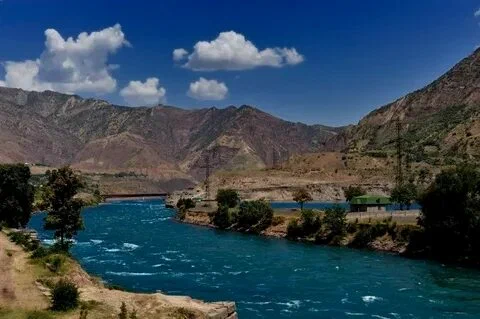
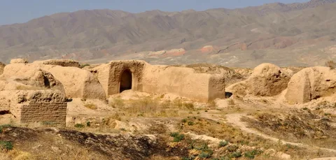
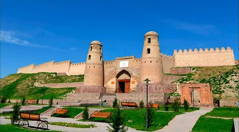

Уникальная природа Таджикистана

Величественные Памирские горы

Красивейшее озеро Искандеркуль

Бурная река Вахш
Таджикистан - страна с удивительной природой, где горы занимают 93% территории. Здесь находится самый высокий пик бывшего СССР - пик Исмоила Сомони (7495 м).
Богатая культура и традиции
Традиционный таджикский танец
Таджикская культура насчитывает более 3000 лет и тесно связана с персидской культурой. Таджики сохранили древние традиции, музыку, танцы и ремесла.
Главные достопримечательности
- Древний город Пенджикент - "Среднеазиатские Помпеи"
- Гиссарская крепость - памятник XVIII века
- Национальный музей Таджикистана в Душанбе
- Фанские горы - рай для альпинистов

Руины древнего Пенджикента

Гиссарская крепость